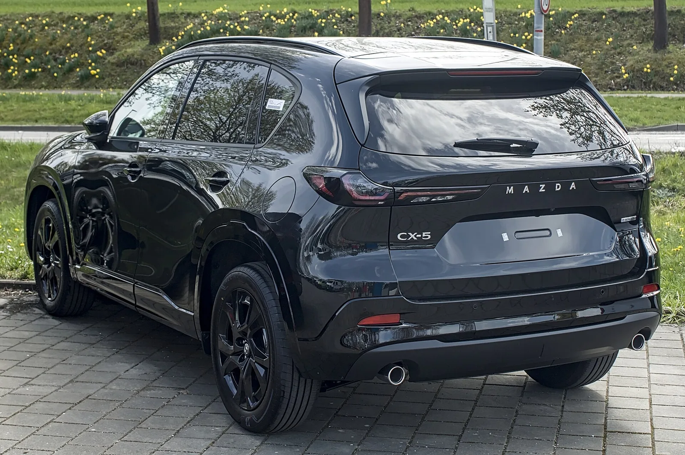
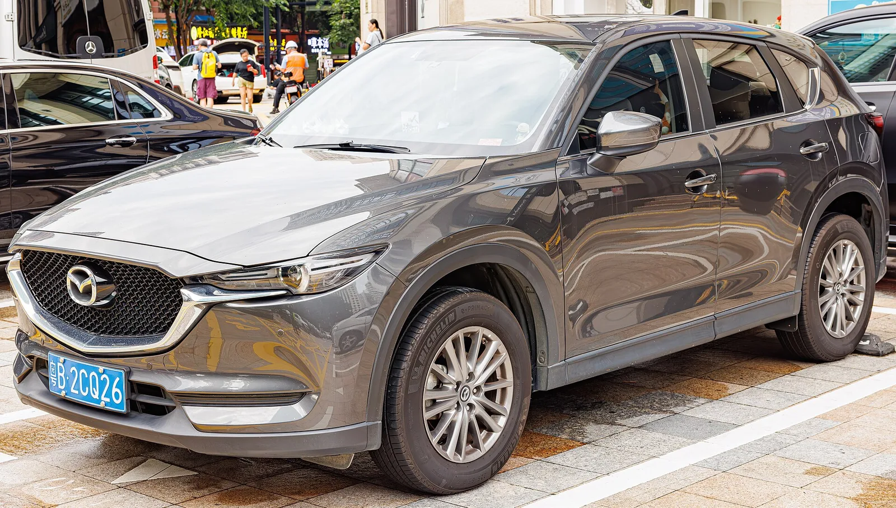

▲ 신형 CX-5. 무스 테스트에서 롤이 크게 나타났다 ⓒ Wikimedia Commons
마쓰다는 오랫동안 "잘 도는 SUV"로 팔려왔습니다.
그런데 신형 CX-5가 무스 테스트에서 26.3초를 기록했습니다. 미니 컨트리맨과 르노 세닉이 26.2초였습니다.
0.1초 차이입니다. 다만 진짜 문제는 시간이 아니라 그 과정에서 나타난 움직임이었습니다.
1. 무스 테스트란 무엇인가
무스 테스트(엘크 테스트)는 갑자기 나타난 장애물을 피하는 상황을 재현한 시험입니다. 이름은 북유럽에서 도로로 뛰어드는 무스(말코손바닥사슴)에서 왔습니다.
| 단계 | 내용 |
|---|---|
| 1 | 콘으로 만든 통로에 일정 속도로 진입 |
| 2 | 급격히 옆 차선으로 회피 |
| 3 | 다시 원래 차선으로 복귀 |
| 4 | 콘을 건드리지 않고 통과한 최고 속도를 기록 |
이 시험이 어려운 이유는 두 번의 급격한 방향 전환 때문입니다. 첫 번째 조향으로 차체가 한쪽으로 기울고, 그 상태에서 반대로 꺾으면 하중이 반대쪽으로 급격히 옮겨갑니다.
이 순간을 견디지 못하면 뒤가 흐르거나 전복 위험이 생깁니다. 1997년 메르세데스 A클래스가 이 시험에서 넘어져 대규모 리콜로 이어진 사례가 유명합니다.
2. 기록을 어떻게 읽어야 하나
| 차량 | 기록 |
|---|---|
| 마쓰다 CX-5 | 26.3초 / 진입 44mph |
| 레인지로버 PHEV | 26.3초 |
| 미니 컨트리맨 | 26.2초 |
| 르노 세닉 | 26.2초 |
| 마쓰다 CX-60 (이전 테스트) | 진입 47.8mph |
0.1초는 오차 범위로 볼 수도 있는 차이입니다. 문제는 비교 대상입니다.
레인지로버 PHEV는 2.5톤이 넘는 대형 SUV입니다. 무게로만 보면 CX-5가 유리해야 합니다. 그런데 같은 기록이 나왔습니다.
더 뼈아픈 건 CX-60입니다. 같은 브랜드의 상급 모델이 진입 속도 47.8mph를 기록했습니다. CX-5의 44mph보다 3.8mph(약 6km/h) 높습니다.

▲ 신형 CX-5. 진입 속도 44mph는 같은 브랜드 CX-60(47.8mph)보다 낮다
3. 롤이 왜 문제인가
km77이 지적한 것은 "상당한 롤"이었습니다. 서스펜션이 무르게 세팅돼 있다는 것이 원인으로 지목됐습니다.
| 세팅 | 승차감 | 회피 성능 | 하중 이동 |
|---|---|---|---|
| 무르게 | 좋다 | 불리 | 느리고 크다 |
| 단단하게 | 나쁘다 | 유리 | 빠르고 작다 |
롤이 크면 타이어의 접지 조건이 나빠집니다. 차체가 기울면 바깥쪽 타이어에 하중이 몰리고 안쪽 타이어는 떠오릅니다. 네 바퀴가 고르게 붙어 있어야 나오는 접지력이 줄어듭니다.
다만 km77의 평가에는 긍정적인 대목도 있습니다. "예측 가능하고 일관돼 통제는 된다"고 했습니다. 갑자기 뒤가 튀어나가는 종류의 위험은 없다는 뜻입니다.
느리지만 안전한 쪽이라는 평가에 가깝습니다.
4. 마쓰다가 방향을 바꿨다는 신호
마쓰다는 '진 바이 마쓰다(人馬一体)'를 내걸어온 브랜드입니다. 사람과 말이 하나가 된다는 뜻으로, 운전 감각을 브랜드 정체성으로 삼아왔습니다.
그 브랜드의 주력 SUV가 "빠르지도 특별히 재미있지도 않다"는 평가를 받았습니다.
| 항목 | 기존 세대 | 신형 |
|---|---|---|
| 서스펜션 | 상대적으로 단단 | 무르게 세팅 |
| 지향 | 주행 감각 | 승차감·정숙성 |
| 회피 성능 | — | 동급 하위권 |
이건 실패라기보다 선택으로 보는 편이 정확합니다. 준중형 SUV 구매층의 다수는 서킷이 아니라 출퇴근길을 달립니다. 승차감과 정숙성이 판매에 더 직접적으로 작용합니다.
다만 "마쓰다니까 잘 돌 것"이라는 기대를 갖고 사는 사람에게는 다른 이야기입니다.

▲ 이전 세대 CX-5. 신형은 서스펜션을 무르게 바꾸며 성격이 달라졌다
5. 진짜 불만은 따로 있다
보도가 지적한 CX-5의 주된 약점은 회피 성능이 아니라 출력입니다.
해법으로 터보 엔진 또는 하이브리드 추가가 거론되고 있습니다. 마쓰다는 CX-50, CX-70, CX-90 등 상급 모델에 이미 터보와 직렬 6기통을 운용하고 있어, 기술적으로 못 넣을 이유는 없습니다.
| 구분 | 영향 |
|---|---|
| 가속력 | 개선 — 다만 무스 테스트와는 무관하다 |
| 차량 중량 | 하이브리드는 배터리만큼 무거워진다 |
| 롤 | 무게가 늘면 더 커질 수 있다 |
| 서스펜션 | 출력 추가 시 세팅을 함께 손봐야 한다 |
출력을 올리면서 서스펜션을 그대로 두면 상황이 나빠질 수 있습니다. 마쓰다가 파워트레인을 추가한다면 하체 세팅도 함께 조정할 가능성이 큽니다.

▲ 마쓰다는 상급 모델에 이미 터보와 직렬 6기통을 운용하고 있다
6. 국내에서는 살 수 없다
마쓰다는 국내에 정식 판매되지 않습니다. CX-5도 국내에서 신차로 구입할 수 없습니다.
다만 무스 테스트 결과를 읽는 법은 국내 차에도 그대로 적용됩니다. 회피 성능은 카탈로그에 나오지 않는 항목이고, 시승에서도 확인하기 어렵습니다. km77 같은 매체의 시험 영상이 사실상 유일한 공개 자료입니다.
7. 정리
2026년형 마쓰다 CX-5가 km77 무스 테스트에서 26.3초, 진입 속도 44mph를 기록했습니다. 미니 컨트리맨·르노 세닉(26.2초)에 0.1초 뒤졌고, 레인지로버 PHEV와 동률이었습니다.
같은 브랜드 CX-60이 이전 테스트에서 47.8mph를 기록한 것과 비교하면 격차가 뚜렷합니다. 원인은 무르게 세팅된 서스펜션에 따른 롤로 지목됐습니다.
km77은 "예측 가능하고 일관돼 통제는 되지만, 빠르지도 특별히 재미있지도 않다"고 평했습니다. 주된 불만은 출력 부족이며, 터보나 하이브리드 추가가 해법으로 거론됩니다. 마쓰다는 국내에 정식 판매되지 않습니다.